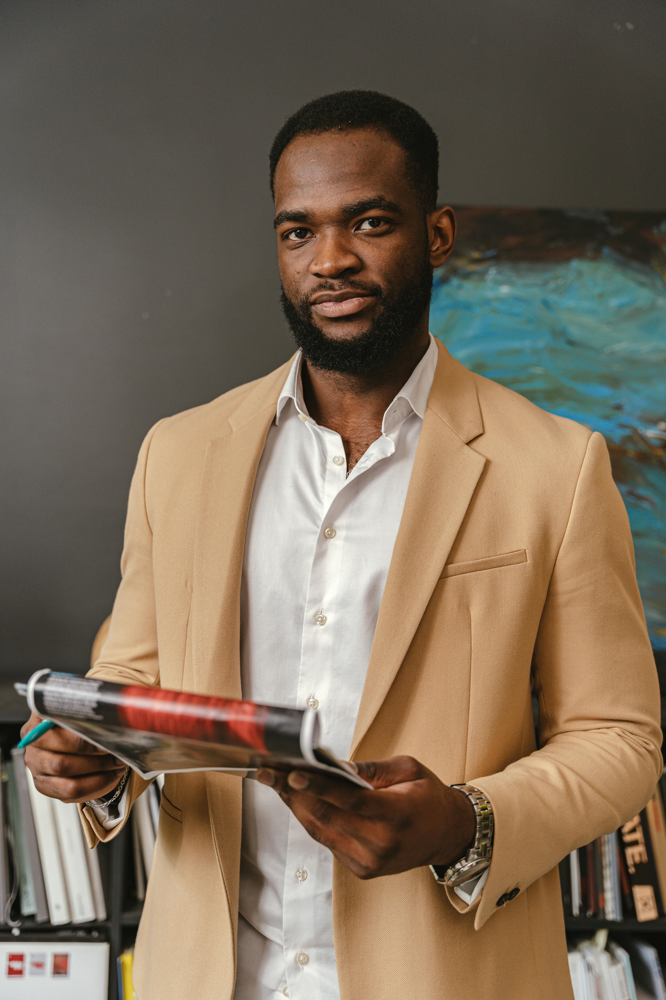
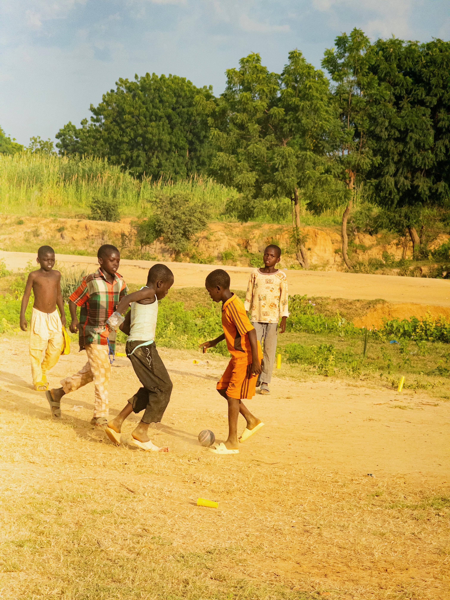
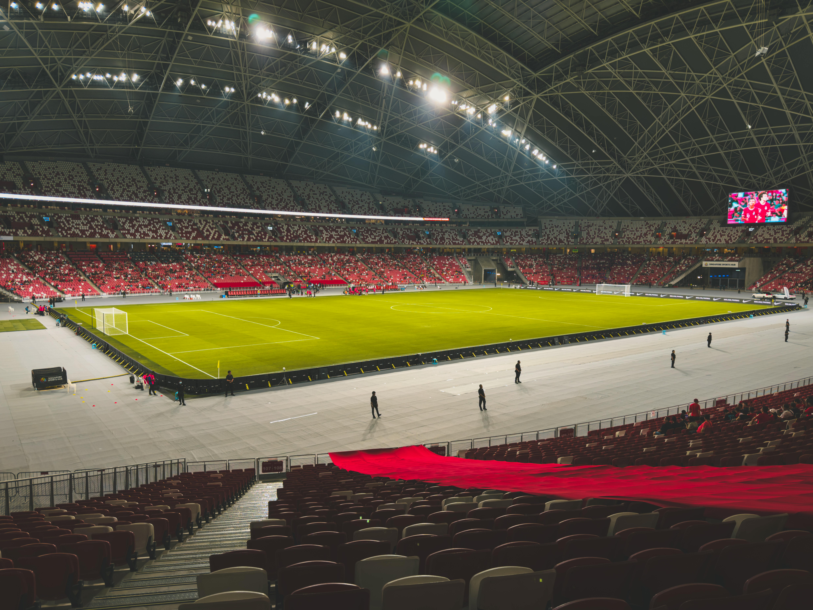
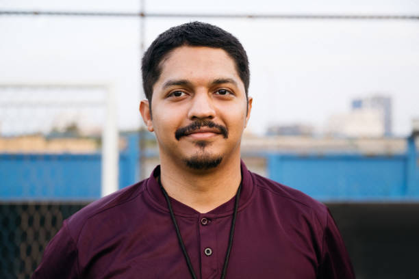
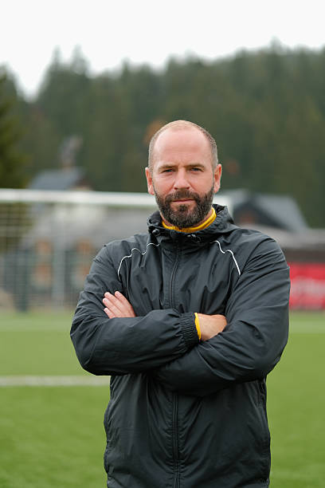
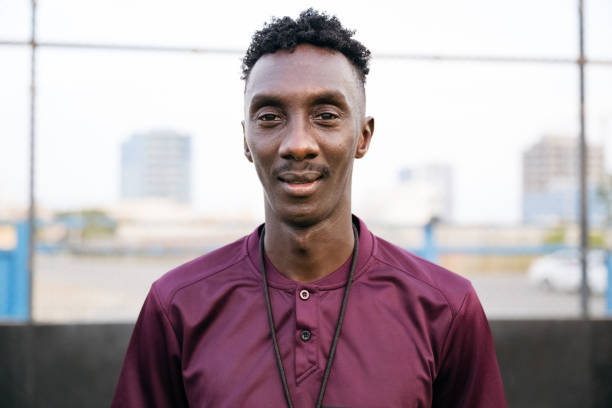
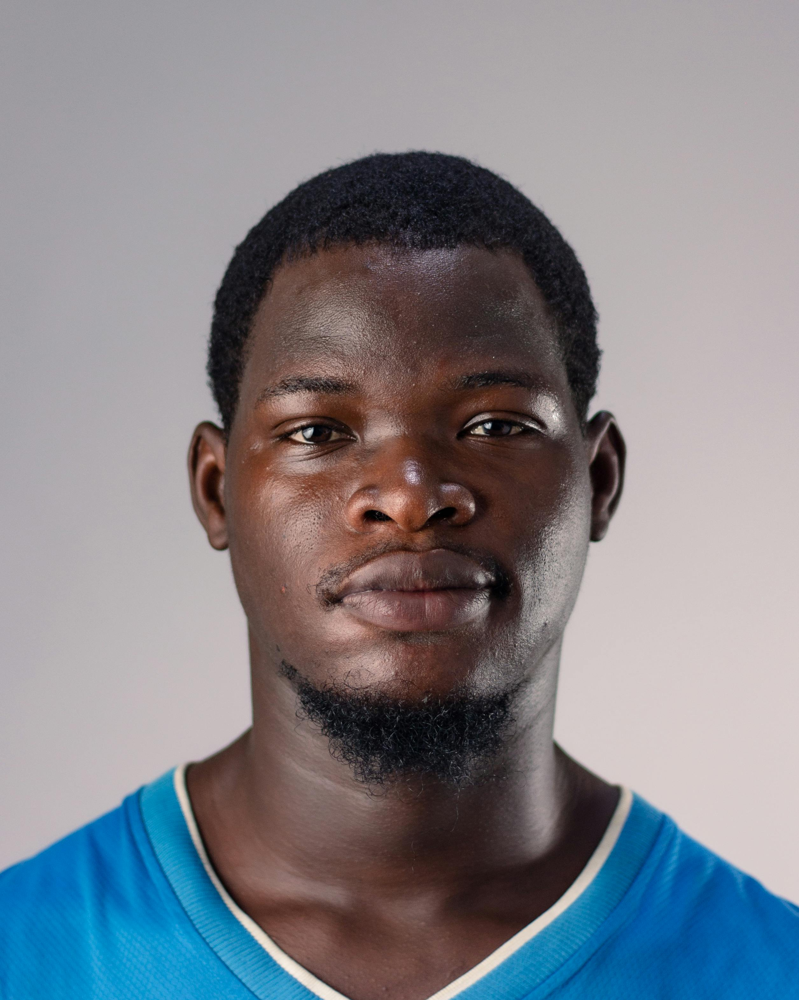

ABOUT US
The history of Unity Football Academy
CO FOUNDERS/OWNERS

======= >>>>>>> 50eb3b7df2c4c05ec07615dddb57932e361c44f4Co Founder of UFA
Co Founder/ Owner of UFA
Unity Football Academy was founded by a group of football enthusiasts who noticed a great number of unfortunate or under privilege children did not have access to proper training facilities. This group of football lovers later invested into a football youth development program to accommodate those who don’t have access to proper equipment and overall quality football resources. <<<<<<< HEAD Years later this organisation has transpired into a somewhat NPO, where by now we accommodate ======= Years later this organisation has transpired into a somewhat NPO, where by now we accommodate >>>>>>> 50eb3b7df2c4c05ec07615dddb57932e361c44f4 those who not struggling with quality football development but alos to those who are struggling at their homes whether it being financially or mentally. Our organisation provides a sense of refuge for struggling children.
OUR MISSION

We aim to be a refuge for under privileged children who don’t have access to proper training
facilities and to those who are highly unfortunate. We aim for such through our free of charge youth
development program to accomodate those in need and to unlock their full potential.
We as football lovers and as experienced staff understand the importance of nuturing young talent, especially at a very young. We are aware that some part of South Africa are hiding hidden gems in terms of football talent especially amongst the youth of the nation. This issue is has many factors, one of them being the lack of proper training equipment and facilities to help unlock their full potential and thats were UFA comes in. As mentioned above initially, our mission or main objective is try affect the gap between individuals who have access to quality equipment and facilities and to those who do not.
OUR VISION

Overtime we would like to be nationally and potentially globally known not just for our quality youth development programs but as well as to what we do for the unfortunate.
OUR SQUAD
<<<<<<< HEAD
Sibusiso Zulu
COACH ZULU
Favorite Position:MIDFIELD
Bongani Mokoena
COACH BONGA
Favorite Position: DEFENCE

======= >>>>>>> 50eb3b7df2c4c05ec07615dddb57932e361c44f4Carlos Mendes
COACH MENDES
Favorite Position: STRIKER

======= >>>>>>> 50eb3b7df2c4c05ec07615dddb57932e361c44f4Matthew Hayes
COACH MATT
Favorite Position: GOALKEEPER

======= >>>>>>> 50eb3b7df2c4c05ec07615dddb57932e361c44f4Ahmed El-Sayed
COACH SAYED (ASSISTANT COACH)
Favorite Position: MIDFIELD

======= >>>>>>> 50eb3b7df2c4c05ec07615dddb57932e361c44f4Tinashe Chikomba
COACH CHIKOMBA (ASSISTANT COACH)
Favorite Position: WINGER
 =======
>>>>>>> 50eb3b7df2c4c05ec07615dddb57932e361c44f4
=======
>>>>>>> 50eb3b7df2c4c05ec07615dddb57932e361c44f4
Gary Walters
MR GARY
CLUB MANAGER
Ibrahim Kamara
MR KAMARA
CLUB BOARD DIRECTOR
OUR PARTNERS AND SPONSORS

=======
>>>>>>> 50eb3b7df2c4c05ec07615dddb57932e361c44f4 For over 2 decades, we have been partnered with NPF the Next Play Foundation a dynamic community concious organisation focused on nuturing and developing young talent across all areas of Southern Africa. Through our partnerships with varrious clubs and academys such as UFA, we as an organisation create oppurtuinites for the youth through the provision of quality training facilities, effective training equipment and most importantly professional coaches and managers asuring quality devlopment. Through our work and collaborations, NPF aims to cater the for the individuals who unfortunately do not have access to such luxuries. This collaboration helps bridge gaps in underserved communities, ensuring that talented youth are given a platform to develop discipline, teamwork, and confidence. Through structured programs, coaching support, and community engagement, Next Play Foundation and its academy partners work together to inspire the next generation of players while promoting positive values on and off the field.